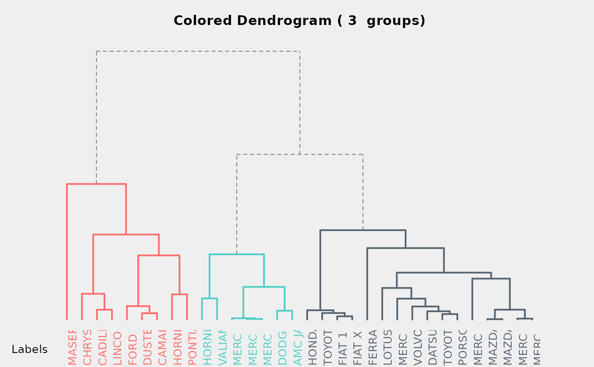
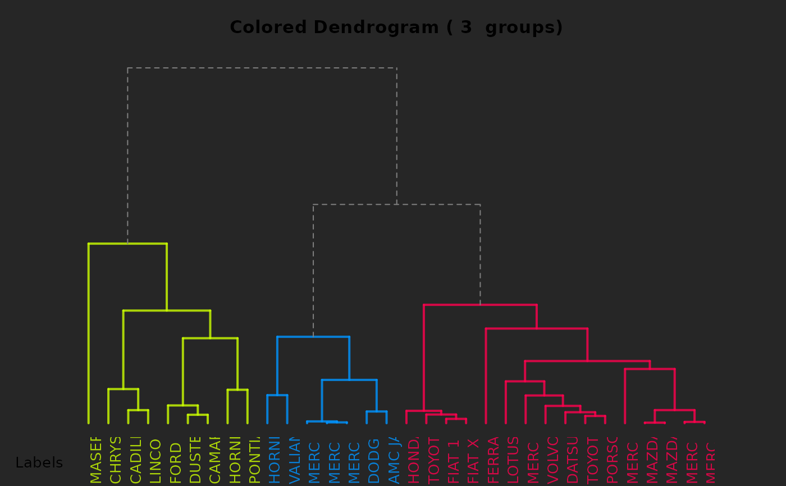
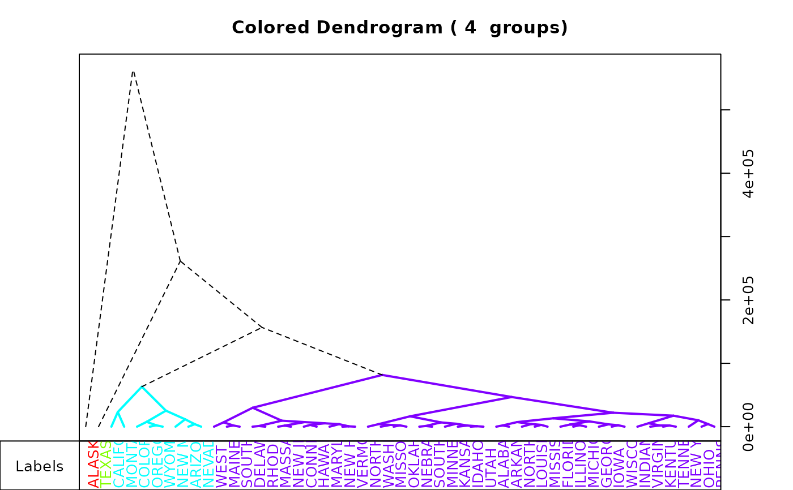
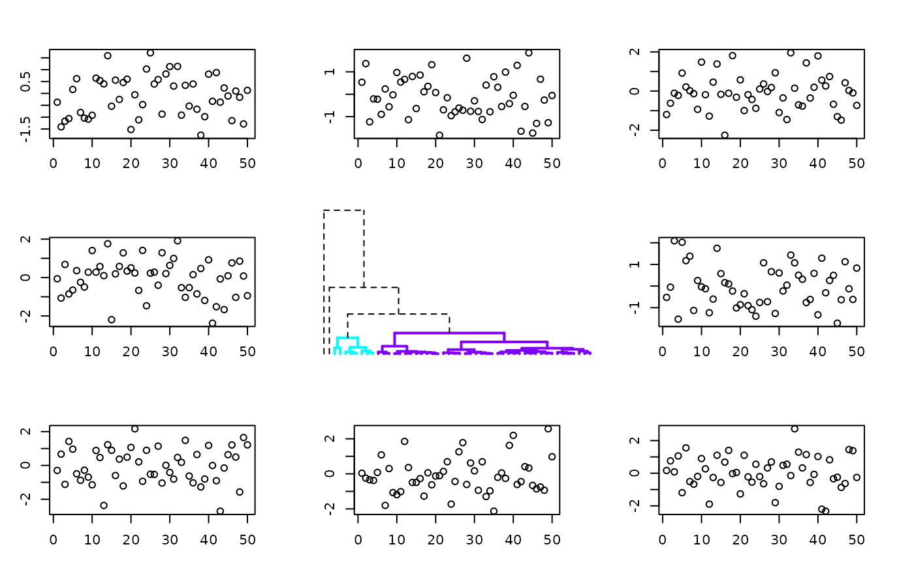

![[Superseded]](figures/lifecycle-superseded.svg)
This function plot an dendrogram with different colors to each cluster for a given number of classes. See examples.
A2Rplot(
x,
k = 2,
col.up = "black",
col.down = rainbow(k),
lty.up = 2,
lty.down = 1,
lwd.up = 1,
lwd.down = 2,
type = c("rectangle", "triangle"),
knot.pos = c("mean", "bary", "left", "right", "random"),
criteria,
fact.sup,
show.labels = TRUE,
only.tree = FALSE,
main = paste("Colored Dendrogram (", k, " groups)"),
boxes = TRUE,
members
)Arguments
- x
an
hclustobject to plot- k
the number of clusters
- col.up
color for the upper part
- col.down
a vector of colors of length
k, one color per cluster- lty.up
line type for the upper part (see
par)- lty.down
line type for the clusters part (see
par)- lwd.up
line width for the upper part (see
par)- lwd.down
line width for the clusters part (see
par)- type
type of link (
"rectangle"or"triangle")- knot.pos
position of the knots:
"mean"mean between the two tree sons,"bary"weighted mean relative to the number of observations in the left and the right branch,"left","right","random"just for fun actually- criteria
vector of a criteria to draw on the left of the tree
- fact.sup
a factor to categorize the observations
- show.labels
TRUEif the labels should be drawn- only.tree
TRUEif only the tree should be drawn (use that to include the tree in a more complicated layout)- main
title of the plot
- boxes
TRUEto draw the bow around the plots- members
members of each terminal node (see
hclustfor more details)
Note
The A2R package has not been updated since January 2006 and cannot be installed anymore with a recent version of R. It's why this function has been copied here.
Examples
# Example with iris data
d <- dist(iris[, 1:4], method = "euc")
h <- hclust(d)
Species <- iris[, 5]
A2Rplot(h, k = 3, fact.sup = Species, knot.pos = "bary", show.labels = FALSE)
# Examples from http://rpubs.com/gaston/dendrograms
bg.def <- par()$bg
hc <- hclust(dist(mtcars))
par(bg = "#EFEFEF")
A2Rplot(hc,
k = 3, boxes = FALSE, col.up = "gray50",
col.down = c("#FF6B6B", "#4ECDC4", "#556270")
)

par(bg = "gray15")
cols <- hsv(c(0.2, 0.57, 0.95), 1, 1, 0.8)
A2Rplot(hc, k = 3, boxes = FALSE, col.up = "gray50", col.down = cols)

par(bg = bg.def)
# Examples with state.x77
d77 <- dist(state.x77)
h77 <- hclust(d77)
A2Rplot(h77, k = 4, knot.pos = "mean", type = "tri")

A2Rplot(h77,
k = 4, lty.up = 1, lwd.down = 1,
col.down = c("purple", "black", "green3", "orange"),
col.up = "gray", boxes = FALSE
)
A2Rplot(h77, k = 4, knot.pos = "left", type = "tri")
# Example showing how to include this in an other layout with only.tree
op <- par(no.readonly = TRUE)
par(mfrow = c(3, 3))
par(mar = c(3, 3, 3, 3))
plot(rnorm(50)) # one plot
plot(rnorm(50)) # one plot
plot(rnorm(50)) # one plot
plot(rnorm(50)) # one plot
par(mar = c(1, 1, 1, 1))
A2Rplot(h77, k = 4, only.tree = TRUE, boxes = FALSE)
#> NULL
par(mar = c(3, 3, 3, 3))
plot(rnorm(50)) # one plot
plot(rnorm(50)) # one plot
plot(rnorm(50)) # one plot
plot(rnorm(50)) # one plot

par(op)
# Example using members
hc <- hclust(dist(USArrests)^2, "cen")
memb <- cutree(hc, k = 10)
cent <- NULL
for (k in 1:10) {
cent <- rbind(cent, colMeans(USArrests[memb == k, , drop = FALSE]))
}
hc1 <- hclust(dist(cent)^2, method = "cen", members = table(memb))
hc1$labels <- paste("g", 1:10)
A2Rplot(hc1,
members = table(memb),
k = 4,
lwd.up = 2, lty.up = 1, col.up = "gray",
lwd.down = 1, lty.down = "twodash",
col.down = c("orange", "brown", "green3", "royalblue"),
knot.pos = "bary"
)